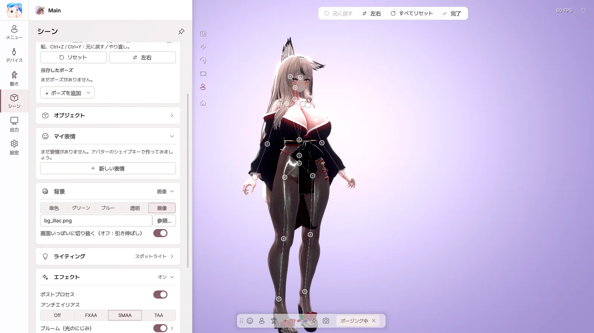
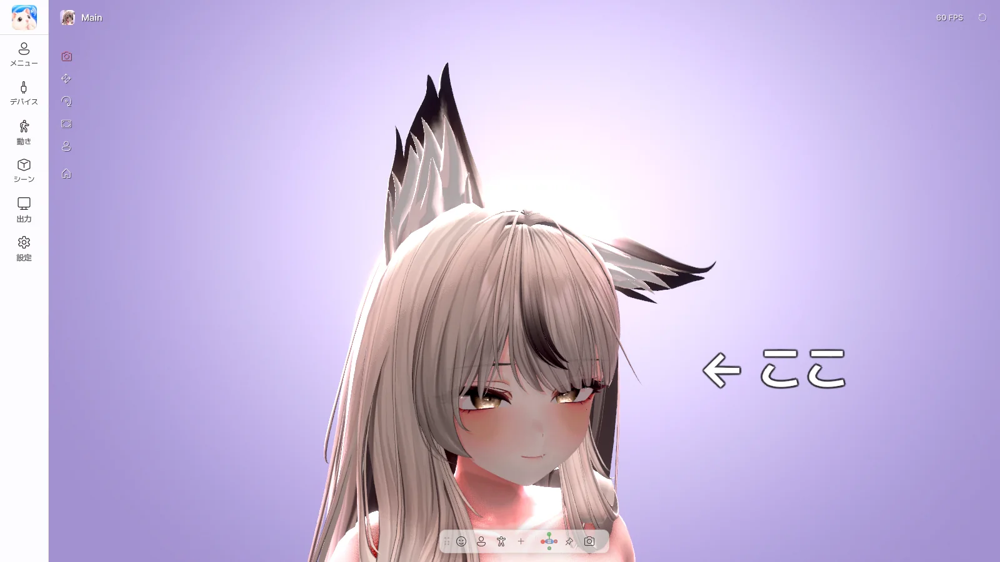

11. ポージング・オブジェクト・表情
| 機能 | エディション |
|---|---|
| ポージング | Pro |
| オブジェクト | Pro |
| 画面共有のほかのソース | Pro |
| マイ表情 | Basic・Pro |
| 自動表情 | Basic・Pro |
ポージング

シーン › ポージング › ポージングモード をオンにすると、ボーンを直接動かしてポーズを作れます。
- ボーンをクリックして選び、ドラッグして動かします。手や足をドラッグすると、腕・脚全体がついてきます。
- リングをドラッグすると回転します。
- 左右 — 左右のポーズを反転したり、コピーしたりします。
- + ポーズを追加 › このポーズを保存 で保存し、アバターメニューの ポーズ カードからすぐにオンにできます。
- Unity で作った
.animファイルも読み込めます。
ポージングモードをオフにする前に、ポーズを保存しておいてください。
オブジェクト

シーン › オブジェクト › + オブジェクトを追加 で、テキスト、画像、図形、3D モデルを置きます。
- 付ける場所 を頭や手にすると、アバターと一緒に動きます。
- テキストはダブルクリックすると、その場で編集できます。
- 3D モデルは、Unity の Curious Bobby → Prop Exporter で
.vpropファイルを作って使います。
画面共有のほかのソース
画面共有に、ウィンドウやモニターをさらに重ねられます。チャットウィンドウや音楽プレーヤーを一緒に見せたいときに使います。
マイ表情
アバターのシェイプキーで、自分だけの表情を作ります。
- 新しい表情 を押します。
- シェイプキーを検索して + で追加し、強さを調整します。
- 保存 すると、アバターメニューの マイ表情 カードから押してオンにできます。
自動表情
笑ったり驚いたりすると、決めておいた表情が自動で出ます。動き › 自動表情 でオンにして、笑顔・驚き・ウインクなどの表情ごとに、表示する表情を割り当てます。
マイ表情と保存したポーズにショートカットを設定する機能は、今後対応予定です。